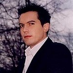
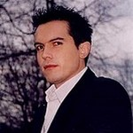
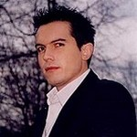

Divers portraits de Maxime Chattam © Website Author
Librairie Lamartine Accueil | Portrait | Notre lexique | Contact
Au cours de son enfance, le jeune Maxime fait de fréquents séjours aux USA: sa première destination en 1987 est Portland dans l'Oregon, ville qui inspire son premier roman. Maxime a effectué sa scolarité au lycée Montesquieu à Herblay puis à l'Université Paris XIII-Nord. Durant son adolescence, souhaitant devenir acteur, il prend des cours de comédie au Cours Simon à Paris. Pour cette période, il ajoute: «Les interprétations classiques m'ont servi de références dans mes ouvrages.» Il obtient des rôles pour la télévision et la publicité.

Divers portraits de Maxime Chattam © Website Author
Cette passion est vite abandonnée pour revenir à son premier amour : l'écriture. En 1988, il passe quelque temps dans la jungle thaïlandaise. Le journal qu'il écrit alors est sa première expérience avec l'écriture. Il la poursuit au début des années 1990 avec ses premiers essais littéraires d’abord inspirés de Stephen King et notamment du film Stand By Me. Ensuite, Il ébauche son premier roman qui ne sera jamais publié.
Très vite, il se fascine pour les romans policiers mais, conscient des connaissances qu'il faut avoir pour ce genre d'écrits, il suit une formation en criminologie pendant un an à l'université de Saint-Denis. Durant cette année, il apprend les rudiments de la psychologie criminelle, de la police technique et scientifique et de la médecine légale.
Maxime Chattam sait utiliser les ficelles du thriller américain qu'il a assimilées : courts chapitres, tension permanente, rebondissements, scènes d’horreur, héros émouvants qui conservent une part de mystère, structure cinématographique…
Article écrit par Mme Libert Anne Contact
Visitez aussi: Le Club
Place de l'Ecole des Cadets 6
5000 - NAMUR
Il en obtient en